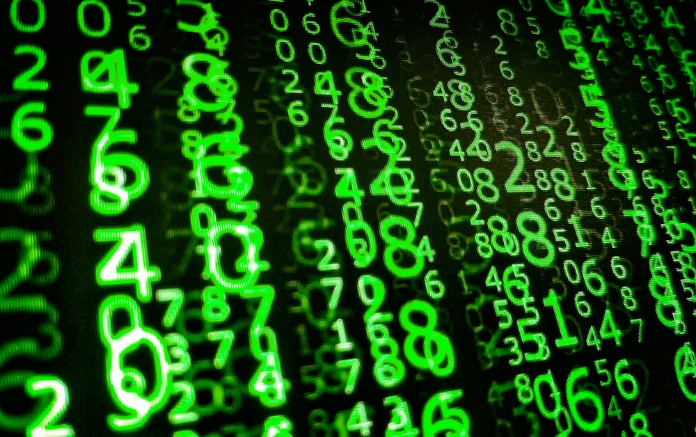
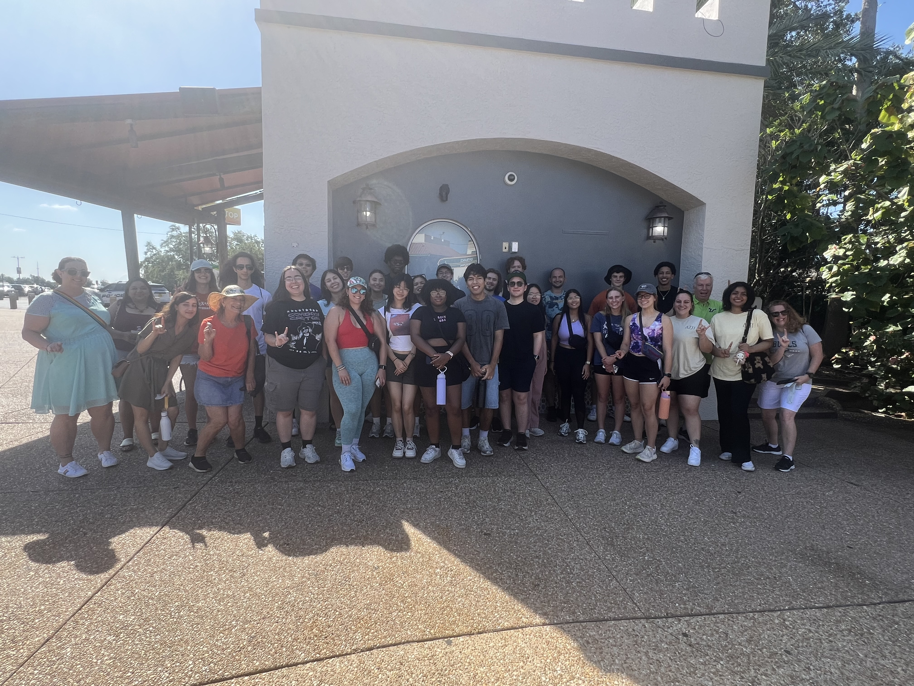
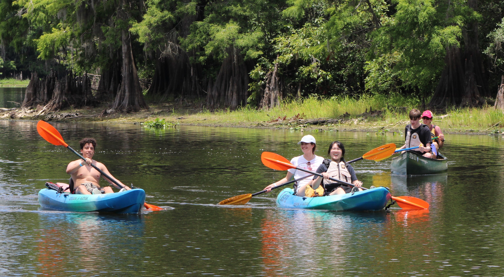
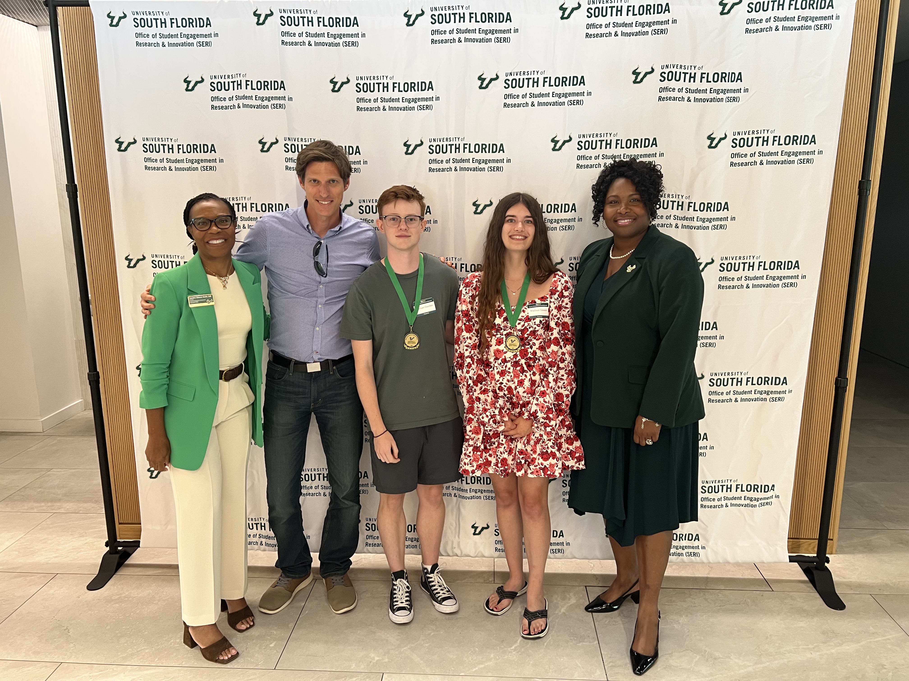

Program Overview
The NSF Research Experiences for Undergraduates (REU) Site in Cryptography and Coding Theory offers undergraduate students the opportunity to participate in research at the University of South Florida. The program brings together faculty mentors and student researchers from mathematics, computer science, and related disciplines.
Participants work on research projects in areas connected to modern cryptography and coding theory, attend seminars and training sessions, and gain experience presenting mathematical work in a professional setting. The program is designed both to introduce students to research and to help prepare them for graduate study and research-oriented careers.
What Students Do
The REU combines focused research work with mentoring, training, and community-building activities.
Research Projects
Students work in small groups or closely with faculty mentors on active research problems in cryptography, coding theory, and adjacent mathematical areas.
Seminars and Training
Participants attend seminars, research talks, and instructional sessions designed to introduce new tools, mathematical background, and communication skills.
Professional Development
The program supports student growth through presentations, poster sessions, graduate school preparation, and participation in a collaborative research environment.
Research Themes
REU participants may work on projects across several themes represented at the Center for Cryptographic Research.
Mathematical Cryptography
Projects in mathematical cryptography explore the algebraic and number-theoretic foundations of modern cryptographic constructions, including lattices, isogenies, and related structures.

Coding Theory
Coding theory projects investigate the structure and applications of error-correcting codes, with connections to algebra, combinatorics, secure communication, and cryptography.

Applied Cryptography
Applied cryptography projects focus on practical cryptographic protocols and systems, including privacy, authentication, and secure communication in modern applications.

Hardware Security
Some projects examine the practical realities of secure systems, including hardware security, implementation issues, and attacks based on physical leakage such as side channels.

Post-Quantum Cryptography
Participants may also work on cryptographic systems designed to resist quantum attacks, an area of growing importance in both theory and real-world security.
Student Experience
The REU is both a research program and a community. Students present their work, participate in academic events, and build connections with faculty and peers.

Research Community
Students engage with the broader research environment through seminars, workshops, and academic events.

Presentations and Recognition
Participants gain experience presenting research and sharing results in professional settings.

Community and Cohort Experience
The program also emphasizes collaboration, mentoring, and community-building among participants.
Application Information
The REU is open to undergraduate students interested in mathematics, computer science, cryptography, coding theory, and related areas. Application details, dates, and deadlines are updated for each program cycle.
The current program information may include eligibility requirements, stipend details, housing information, and instructions for submitting application materials.
Past Projects
Over the years, REU participants have worked on a wide range of projects in cryptography, coding theory, and related areas. These projects reflect both the breadth of the center and the research experience offered to students.
Visit the archive to explore past project descriptions, grouped by year.
